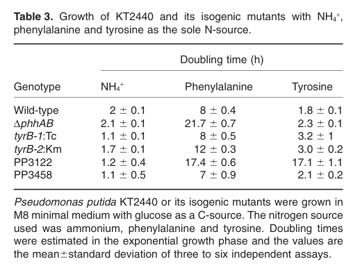
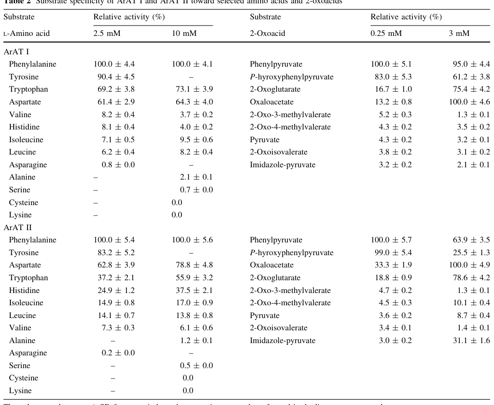

tyrB (PP_1972; also referred to as tyrB-1) is a cytoplasmic, pyridoxal 5'-phosphate (PLP)-dependent aminotransferase of the class-I (fold-type I) aspartate aminotransferase superfamily. It catalyzes reversible transamination in which an amino group is transferred from an amino acid donor to a 2-oxoacid acceptor (commonly 2-oxoglutarate, yielding L-glutamate). It is annotated as an aromatic-amino-acid aminotransferase, interconverting aromatic amino acids (L-tyrosine, L-phenylalanine) and their cognate aromatic 2-oxoacids (4-hydroxyphenylpyruvate, phenylpyruvate), and contributes to aromatic amino acid biosynthesis and catabolism. Like many class-I PLP aminotransferases it is a homodimer with active sites formed at the subunit interface. In P. putida KT2440 it is one of several aminotransferase isozymes acting on aromatic amino acids; genetic studies show that loss of tyrB alone causes only mild aromatic-amino-acid utilization phenotypes because of redundancy with paralogous aminotransferases (notably PP_3590/AmaC and tyrB-2/phhC), so its physiological role overlaps with those enzymes.
| GO Term | Evidence | Action | Reason |
|---|---|---|---|
|
GO:0003824
catalytic activity
|
IEA
GO_REF:0000002 |
MARK AS OVER ANNOTATED |
Summary: Generic root-level molecular function term. tyrB is an enzyme, so this is not wrong, but it is uninformatively general and is fully subsumed by the more specific transaminase/aminotransferase activity terms.
Reason: "catalytic activity" is the MF root and conveys no specific information. The more precise terms GO:0008483 (transaminase activity) and GO:0004838 (L-tyrosine:2-oxoglutarate transaminase activity) capture the actual function.
|
|
GO:0004838
L-tyrosine:2-oxoglutarate transaminase activity
|
IEA
GO_REF:0000118 |
ACCEPT |
Summary: Specific aromatic (tyrosine) aminotransferase activity assigned by TreeGrafter from the PTHR11879:SF37 "aromatic-amino-acid aminotransferase" subfamily. This is consistent with the protein family, the COG1448 assignment, and with biochemical/genetic characterization of P. putida aromatic aminotransferases. This is the best representation of the gene's core molecular function.
Reason: Domain/family evidence (class-I PLP aminotransferase, PANTHER ArAT subfamily SF37) plus genetic evidence in KT2440 (tyrB mutants show a tyrosine-utilization phenotype; PMID:20050871) support tyrosine aminotransferase activity. The enzyme is likely promiscuous across aromatic amino acids (also acting on phenylalanine), but this term well captures the central characterized activity.
|
|
GO:0005829
cytosol
|
IEA
GO_REF:0000118 |
ACCEPT |
Summary: Cytosolic localization predicted by TreeGrafter. Soluble class-I PLP aminotransferases acting in amino acid metabolism are cytoplasmic enzymes; the sequence has no signal peptide or transmembrane region. Consistent with the expected localization.
Reason: Aromatic aminotransferases in this family are soluble cytoplasmic enzymes. No experimental KT2440 localization data exist, but the prediction is biologically appropriate and there is no evidence for periplasmic/membrane localization.
|
|
GO:0006520
amino acid metabolic process
|
IEA
GO_REF:0000002 |
MODIFY |
Summary: Broad biological process term. tyrB participates in (aromatic) amino acid metabolism, so this is correct but general. A more specific process such as aromatic amino acid family metabolism / phenylalanine or tyrosine biosynthesis or catabolism would be more informative.
Reason: The annotation is correct in essence but too high-level. tyrB acts specifically on aromatic amino acids (Tyr/Phe), so the more specific "aromatic amino acid family metabolic process" better reflects the characterized role while remaining defensible from family + genetic evidence. (Chorismate metabolic process is not appropriate: tyrB acts downstream of chorismate on the aromatic amino acids/2-oxoacids, not on chorismate itself.)
Proposed replacements:
aromatic amino acid family metabolic process
|
|
GO:0008483
transaminase activity
|
IEA
GO_REF:0000120 |
KEEP AS NON CORE |
Summary: General transaminase (aminotransferase) activity. Correct and well supported by the class-I PLP-dependent aminotransferase family assignment, but less specific than GO:0004838. Useful as a parent term.
Reason: Accurately describes the enzymatic class but is a parent of the more specific aromatic aminotransferase term that represents the core function. Retain as supporting/non-core rather than as the primary MF.
|
|
GO:0030170
pyridoxal phosphate binding
|
IEA
GO_REF:0000120 |
ACCEPT |
Summary: PLP cofactor binding. tyrB is a PLP-dependent enzyme (UniProt COFACTOR: pyridoxal 5'-phosphate; conserved PROSITE PS00105 class-I aminotransferase PLP-binding motif). This is a well-supported and informative molecular function annotation.
Reason: Strong family/motif evidence (IPR004838/IPR004839, PROSITE AA_TRANSFER_ CLASS_1, UniProt cofactor annotation) for PLP binding, which is essential for the transamination mechanism.
|
|
GO:0042802
identical protein binding
|
IEA
GO_REF:0000118 |
MARK AS OVER ANNOTATED |
Summary: Self-association annotation reflecting the homodimeric quaternary structure typical of class-I aminotransferases (UniProt SUBUNIT: Homodimer). While the homodimer assignment is reasonable, "identical protein binding" is an uninformative interaction term that does not convey biological function and is a frequent TreeGrafter over-propagation.
Reason: Homodimerization is a structural property rather than a distinct molecular function; the term adds little and is propagated electronically without direct evidence for this protein. Per curation guidance, generic "protein binding"-type terms are discouraged.
|
Q: What is the in vitro substrate range and kinetic preference of purified PP_1972 (Tyr vs Phe vs Trp; 2-oxoglutarate vs pyruvate as acceptor), given that direct enzymology exists for the paralogs but not for PP_1972 itself?
Q: What is the division of labor among the P. putida KT2440 aromatic aminotransferase isozymes (PP_1972/tyrB-1, PP_3590/AmaC, tyrB-2/phhC) in aromatic amino acid biosynthesis versus catabolism, and under what conditions is PP_1972 non-redundant?
Experiment: Express and purify recombinant PP_1972 and determine kinetic constants (Km/kcat) against a panel of amino donors (Tyr, Phe, Trp, Asp) and 2-oxoacid acceptors to define substrate specificity directly.
Experiment: Construct single and combinatorial in-frame deletions of PP_1972, PP_3590, and tyrB-2/phhC and assay growth on aromatic amino acids as sole nitrogen and carbon sources to resolve the redundancy network and any condition-specific, non-redundant role of PP_1972.
This report is retrieval-only and is generated directly from Asta results.
search_papers_by_relevance with snippet_search.The research report should be a detailed narrative explaining the function, biological processes, and localization of the gene product. Citations should be given for all claims.
You should prioritize authoritative reviews and primary scientific literature when conducting research. You can supplement
this with annotations you find in gene/protein databases, but these can be outdated or inaccurate.
We are specifically interested in the primary function of the gene - for enzymes, what reaction is catalyzed, and what is the substrate specificity? For transporters, what is the substrate? For structural proteins or adapters, what is the broader structural role? For signaling molecules, what is the role in the pathway.
We are interested in where in or outside the cell the gene product carries out its function.
We are also interested in the signaling or biochemical pathways in which the gene functions. We are less interested in broad pleiotropic effects, except where these elucidate the precise role.
Include evidence where possible. We are interested in both experimental evidence as well as inference from structure, evolution, or bioinformatic analysis. Precise studies should be prioritized over high-throughput, where available.
The requested UniProt entry Q88LG1 corresponds to Pseudomonas putida KT2440 gene tyrB with locus tag PP_1972. In KT2440-focused literature analyzing aromatic amino acid catabolism, PP1972 is explicitly referred to as tyrB-1, while a paralogous aminotransferase gene (tyrB-2) is associated with PP_3590 (also discussed as amaC in later work), confirming that the report targets the correct gene/protein in the correct organism/strain (ATCC 47054/KT2440) and not a different “tyrB” from another organism. (herrera2010identificationandcharacterization pages 1-2, borchert2024machinelearninganalysis pages 7-11)
In many bacteria, TyrB denotes a PLP-dependent aminotransferase that catalyzes reversible transamination reactions, transferring an amino group between an amino acid and an α-keto acid. In Pseudomonas, enzymes annotated as TyrB-family aminotransferases have been studied primarily in the context of aromatic amino acid transformations, i.e., interconversion between aromatic amino acids (phenylalanine/tyrosine/tryptophan) and their corresponding aromatic 2-oxoacids. (szkop2013tyrb2andphhc pages 1-2)
PLP-dependent transaminases operate through two half-reactions in which the cofactor cycles between pyridoxal-5′-phosphate (PLP) and pyridoxamine phosphate (PMP), with key intermediates (external aldimine, quinonoid, ketimine) formed during amino-group transfer. A frequent structural theme is an oligomeric enzyme (often a homodimer) with active sites formed by residues from both subunits. (menke2024proteinengineeringof pages 22-25, menke2024proteinengineeringof pages 25-28)
This mechanism-level understanding is important for functional annotation because it explains (i) why PLP is required, (ii) why α-keto acids such as 2-oxoglutarate or pyruvate commonly serve as amino acceptors, and (iii) why these enzymes can show substrate promiscuity that complicates gene-to-function assignment by annotation alone. (menke2024proteinengineeringof pages 22-25, menke2024proteinengineeringof pages 25-28)
Direct purified-enzyme biochemistry for PP_1972/Q88LG1 was not found in the retrieved full texts; however, multiple KT2440 studies place PP_1972 among aromatic/tyrosine aminotransferase-like genes and test its role genetically. (herrera2010identificationandcharacterization pages 1-2, herrera2010identificationandcharacterization pages 4-5, borchert2024machinelearninganalysis pages 7-11)
The reaction class most consistent with the TyrB annotation in this KT2440 context is an aromatic amino acid transamination such as:
Support for this reaction type comes from protein-level characterization of closely related P. putida aromatic aminotransferases (encoded by tyrB-2 and phhC), which preferentially catalyze transamination involving aromatic amino acids and aromatic 2-oxoacids, with PLP included as cofactor and 2-oxoglutarate used as amino acceptor in assays. (szkop2013tyrb2andphhc pages 1-2, szkop2013tyrb2andphhc media f8f3824d)
While the enzyme characterized biochemically in P. putida was not PP_1972, Table 2 from Szkop & Bielawski (2013) provides detailed substrate profiles for two P. putida aromatic aminotransferase isozymes, showing that they most efficiently catalyze reactions involving aromatic amino acids and aromatic 2-oxoacids, with L-phenylalanine and phenylpyruvate being the best substrates reported. Assays used 0.1 M phosphate buffer (pH 8.0), 3 mM 2-oxoglutarate, 10 µM PLP, and 35 °C—conditions consistent with fold-type I PLP aminotransferase enzymology. (szkop2013tyrb2andphhc pages 1-2, szkop2013tyrb2andphhc media f8f3824d)
These data support that TyrB-like enzymes in P. putida are plausibly aromatic aminotransferases rather than strictly tyrosine-specific enzymes, and that substrate promiscuity and isozyme redundancy should be expected in vivo. (szkop2013tyrb2andphhc pages 1-2, szkop2013tyrb2andphhc media f8f3824d)
A central KT2440 pathway context is phenylalanine assimilation/catabolism regulated by PhhR, which induces the phhAB operon encoding a pterin-dependent phenylalanine hydroxylase system (PhhA catalytic hydroxylase; PhhB pterin cofactor regeneration). This provides a route for conversion of L-phenylalanine to L-tyrosine. (herrera2010identificationandcharacterization pages 1-2)
Herrera et al. (2010) place phenylalanine/tyrosine degradation into a larger catabolic funnel via p-hydroxyphenylpyruvate and homogentisate (hpd/hmg genes), which then feeds into central metabolism. (herrera2010identificationandcharacterization pages 4-5)
In KT2440, mutants in TyrB-like genes exhibit measurable growth phenotypes on aromatic amino acids as nitrogen sources.
This pattern supports that TyrB-family enzymes contribute to aromatic amino acid utilization, with a stronger phenotype for tyrB-2 in phenylalanine conditions in this dataset. (herrera2010identificationandcharacterization media d9fda959, herrera2010identificationandcharacterization pages 4-5)
A key development in 2024 is that machine-learning analysis of RB-TnSeq fitness compendia (ICA-derived “fModules”) was used to pinpoint genes involved in phenylalanine/tyrosine catabolism, followed by mutant validation.
Borchert et al. (2024, published March 2024; https://doi.org/10.1128/msystems.00942-23) report that disruption of tyrB (PP_1972) did not inhibit growth on L-phenylalanine or L-tyrosine as sole nitrogen sources, whereas disruption of amaC (PP_3590; sometimes called tyrB2) completely abrogated growth on these substrates. The authors therefore propose re-annotation of AmaC (PP_3590) as an L-tyrosine aminotransferase, implying that PP_1972 is not the primary enzyme for these growth phenotypes under the tested conditions and that previous “tyrB” annotation may overstate its physiological importance. (borchert2024machinelearninganalysis pages 7-11)
This reconciles earlier BarSeq-based observations that PP_1972 often shows weak fitness effects and that a PP_3590/PP_1972 double knockout did not cause phenylalanine auxotrophy, consistent with broader redundancy or alternative routes, while still allowing PP_1972 to contribute in specific environments or regulatory states. (schmidt2022nitrogenmetabolismin pages 8-10, schmidt2022nitrogenmetabolismin pages 10-12)
No retrieved KT2440 primary source in this corpus provided a direct experimental localization (cytosol/periplasm) for PP_1972/Q88LG1.
For context on what localization evidence looks like for bacterial PLP-dependent aminotransferases, Ringel et al. (2017) show that a distinct periplasmic PLP-dependent transaminase (PtaA) can be demonstrated by subcellular fractionation and is a homodimer by SEC-MALS; however, this is a different enzyme in a different Pseudomonas species and should not be taken as evidence that PP_1972 is periplasmic. (ringel2017theperiplasmictransaminase pages 16-18)
Current best-supported statement from the retrieved KT2440 corpus: localization of PP_1972 remains unresolved here and should be taken from UniProt/InterPro experimental annotations if available, or validated experimentally.
The 2024 RB‑TnSeq + ICA framework provides a practical route to re-annotate metabolic genes and identify engineering targets for P. putida as a chassis. In particular, the ability to distinguish PP_1972 (tyrB) from PP_3590 (AmaC) as the functionally dominant aminotransferase for phenylalanine/tyrosine utilization under defined conditions is directly actionable for (i) redirecting aromatic amino acid flux, and (ii) avoiding incorrect knockouts when designing production strains. (borchert2024machinelearninganalysis pages 7-11)
Borchert et al. (2024) also connect aminotransferase-linked modules to tolerance phenotypes during growth with high concentrations of hydroxycinnamates (e.g., ~60 mM in glucose + hydroxycinnamate tests; and higher concentrations as carbon sources in some conditions). These results highlight that aromatic amino acid and aromatic acid metabolism genes can have roles in stress tolerance, a key trait for industrial bioprocessing on lignin-derived aromatics. (borchert2024machinelearninganalysis pages 7-11)
Menke (2024) reviews industrial and engineering aspects of PLP-dependent amine transaminases (ATAs), emphasizing (i) their use in stereoselective synthesis of chiral amines, (ii) the importance of addressing unfavorable equilibria (e.g., via coproduct removal or sacrificial donors), and (iii) the rise of machine-learning-guided engineering. The review notes an industrial benchmark: (R)-ATA-catalyzed synthesis of (R)-sitagliptin with >99.95% optical purity, and also reports large engineering gains (e.g., up to 2000-fold improved catalytic activity in one redesign example), illustrating the real-world value of understanding transaminase substrate specificity and engineering it rationally. (menke2024proteinengineeringof pages 61-71)
Although this review is not specific to PP_1972, it provides authoritative context for why TyrB-family enzymes and related aminotransferases are frequently targeted in metabolic engineering and biocatalysis.
Most defensible functional annotation from the retrieved evidence:
| Aspect | Evidence summary | Key quantitative data |
|---|---|---|
| Target identity | UniProt Q88LG1 corresponds to tyrB / PP_1972 in Pseudomonas putida KT2440; genome annotation in KT2440 literature lists PP1972 as tyrB-1, one of two tyrosine/aromatic aminotransferase-like genes in this strain (herrera2010identificationandcharacterization pages 1-2, herrera2010identificationandcharacterization pages 9-10) | Locus tags/names reported as PP1972 / tyrB-1; paralog also noted as PP3590 / tyrB-2 (herrera2010identificationandcharacterization pages 1-2) |
| Predicted molecular function/class | TyrB/PP_1972 is an aminotransferase in the PLP-dependent aromatic amino acid aminotransferase class; related P. putida aromatic aminotransferases preferentially transaminate aromatic amino acids with 2-oxoglutarate, with best substrates including L-phenylalanine and phenylpyruvate (szkop2013tyrb2andphhc pages 2-4, szkop2013tyrb2andphhc pages 1-2) | Assays for related P. putida ArAT enzymes used 10 µM PLP and 3 mM 2-oxoglutarate; activity measured as release of 1 µmol IPyA min⁻¹ in L-tryptophan:2-oxoglutarate assays (szkop2013tyrb2andphhc pages 2-4) |
| Pathway role in aromatic amino acid metabolism | In KT2440, phenylalanine can be degraded by the phenylalanine hydroxylase pathway (PhhAB → tyrosine → p-hydroxyphenylpyruvate → homogentisate), and KT2440 carries two TyrB-like aminotransferase genes. Mutant phenotypes support TyrB-family participation in phenylalanine/tyrosine catabolism, especially downstream aromatic transamination steps (herrera2010identificationandcharacterization pages 4-5, herrera2010identificationandcharacterization pages 1-2) | Wild type doubling times on sole N source: phenylalanine ~8 h, tyrosine ~1.8 h; tyrB-1 mutant: phenylalanine ~WT, tyrosine ~3.2 h; tyrB-2 mutant: phenylalanine ~12 h, tyrosine ~3.0 h (herrera2010identificationandcharacterization pages 4-5, herrera2010identificationandcharacterization media d9fda959) |
| Evidence for redundancy | Recent RB-TnSeq and prior knockout work indicate functional redundancy among aromatic aminotransferases in P. putida KT2440: PP_1972 has only weak single-gene phenotypes in some aromatic N-source conditions, and even combined loss with PP_3590 did not cause phenylalanine auxotrophy (schmidt2022nitrogenmetabolismin pages 8-10, schmidt2022nitrogenmetabolismin pages 10-12) | BarSeq fitness effects for PP_1972 were small: phenylalanine -0.35 and pipecolate -0.15 in one report; another excerpt summarizes similarly weak effects and cites no phenylalanine auxotrophy in the PP_3590 PP_1972 double knockout (schmidt2022nitrogenmetabolismin pages 8-10, schmidt2022nitrogenmetabolismin pages 10-12) |
| Strength/limits of direct evidence for Q88LG1 | Evidence for PP_1972/Q88LG1 specifically is mainly genetic/fitness-based in KT2440; direct biochemical characterization in P. putida has more clearly identified other aromatic aminotransferase isozymes (tyrB-2/phhC) than PP_1972 itself, so annotation of Q88LG1 is supported by homology plus mutant evidence rather than purified-enzyme kinetics (szkop2013tyrb2andphhc pages 1-2, schmidt2022nitrogenmetabolismin pages 10-12) | No direct purified-enzyme kinetic constants for PP_1972/Q88LG1 were extracted from the cited KT2440 sources; strongest KT2440-specific quantitative data are mutant doubling times and RB-TnSeq fitness values (schmidt2022nitrogenmetabolismin pages 10-12, herrera2010identificationandcharacterization media d9fda959) |
Table: This table summarizes the strongest available evidence for functional annotation of Pseudomonas putida KT2440 tyrB (PP_1972; UniProt Q88LG1), including its identity, predicted aminotransferase role, pathway context, redundancy, and the key quantitative phenotypes available from mutant and fitness studies.
References
(herrera2010identificationandcharacterization pages 1-2): M. Carmen Herrera, Estrella Duque, José J. Rodríguez‐Herva, Ana M. Fernández‐Escamilla, and Juan L. Ramos. Identification and characterization of the phhr regulon in pseudomonas putida. Environmental microbiology, 12 6:1427-38, Jun 2010. URL: https://doi.org/10.1111/j.1462-2920.2009.02124.x, doi:10.1111/j.1462-2920.2009.02124.x. This article has 43 citations and is from a domain leading peer-reviewed journal.
(borchert2024machinelearninganalysis pages 7-11): Andrew J. Borchert, Alissa C. Bleem, Hyun Gyu Lim, Kevin Rychel, Keven D. Dooley, Zoe A. Kellermyer, Tracy L. Hodges, Bernhard O. Palsson, and Gregg T. Beckham. Machine learning analysis of rb-tnseq fitness data predicts functional gene modules in pseudomonas putida kt2440. Mar 2024. URL: https://doi.org/10.1128/msystems.00942-23, doi:10.1128/msystems.00942-23. This article has 13 citations and is from a peer-reviewed journal.
(szkop2013tyrb2andphhc pages 1-2): Michał Szkop and Wiesław Bielawski. Tyrb-2 and phhc genes of pseudomonas putida encode aromatic amino acid aminotransferase isozymes: evidence at the protein level. Amino Acids, 45:351-358, May 2013. URL: https://doi.org/10.1007/s00726-013-1508-y, doi:10.1007/s00726-013-1508-y. This article has 5 citations and is from a peer-reviewed journal.
(menke2024proteinengineeringof pages 22-25): M Menke. Protein engineering of amine transaminases and methyltransferases using machine learning and high-throughput screening tools. Unknown journal, 2024.
(menke2024proteinengineeringof pages 25-28): M Menke. Protein engineering of amine transaminases and methyltransferases using machine learning and high-throughput screening tools. Unknown journal, 2024.
(herrera2010identificationandcharacterization pages 4-5): M. Carmen Herrera, Estrella Duque, José J. Rodríguez‐Herva, Ana M. Fernández‐Escamilla, and Juan L. Ramos. Identification and characterization of the phhr regulon in pseudomonas putida. Environmental microbiology, 12 6:1427-38, Jun 2010. URL: https://doi.org/10.1111/j.1462-2920.2009.02124.x, doi:10.1111/j.1462-2920.2009.02124.x. This article has 43 citations and is from a domain leading peer-reviewed journal.
(szkop2013tyrb2andphhc media f8f3824d): Michał Szkop and Wiesław Bielawski. Tyrb-2 and phhc genes of pseudomonas putida encode aromatic amino acid aminotransferase isozymes: evidence at the protein level. Amino Acids, 45:351-358, May 2013. URL: https://doi.org/10.1007/s00726-013-1508-y, doi:10.1007/s00726-013-1508-y. This article has 5 citations and is from a peer-reviewed journal.
(herrera2010identificationandcharacterization media d9fda959): M. Carmen Herrera, Estrella Duque, José J. Rodríguez‐Herva, Ana M. Fernández‐Escamilla, and Juan L. Ramos. Identification and characterization of the phhr regulon in pseudomonas putida. Environmental microbiology, 12 6:1427-38, Jun 2010. URL: https://doi.org/10.1111/j.1462-2920.2009.02124.x, doi:10.1111/j.1462-2920.2009.02124.x. This article has 43 citations and is from a domain leading peer-reviewed journal.
(schmidt2022nitrogenmetabolismin pages 8-10): Matthias Schmidt, Allison N. Pearson, Matthew R. Incha, Mitchell G. Thompson, Edward E. K. Baidoo, Ramu Kakumanu, Aindrila Mukhopadhyay, Patrick M. Shih, Adam M. Deutschbauer, Lars M. Blank, and Jay D. Keasling. Nitrogen metabolism in pseudomonas putida: functional analysis using random barcode transposon sequencing. Applied and Environmental Microbiology, Apr 2022. URL: https://doi.org/10.1128/aem.02430-21, doi:10.1128/aem.02430-21. This article has 36 citations and is from a peer-reviewed journal.
(schmidt2022nitrogenmetabolismin pages 10-12): Matthias Schmidt, Allison N. Pearson, Matthew R. Incha, Mitchell G. Thompson, Edward E. K. Baidoo, Ramu Kakumanu, Aindrila Mukhopadhyay, Patrick M. Shih, Adam M. Deutschbauer, Lars M. Blank, and Jay D. Keasling. Nitrogen metabolism in pseudomonas putida: functional analysis using random barcode transposon sequencing. Applied and Environmental Microbiology, Apr 2022. URL: https://doi.org/10.1128/aem.02430-21, doi:10.1128/aem.02430-21. This article has 36 citations and is from a peer-reviewed journal.
(ringel2017theperiplasmictransaminase pages 16-18): Michael T. Ringel, Gerald Dräger, and Thomas Brüser. The periplasmic transaminase ptaa of pseudomonas fluorescens converts the glutamic acid residue at the pyoverdine fluorophore to α-ketoglutaric acid. Journal of Biological Chemistry, 292:18660-18671, Nov 2017. URL: https://doi.org/10.1074/jbc.m117.812545, doi:10.1074/jbc.m117.812545. This article has 17 citations and is from a domain leading peer-reviewed journal.
(menke2024proteinengineeringof pages 61-71): M Menke. Protein engineering of amine transaminases and methyltransferases using machine learning and high-throughput screening tools. Unknown journal, 2024.
(herrera2010identificationandcharacterization pages 9-10): M. Carmen Herrera, Estrella Duque, José J. Rodríguez‐Herva, Ana M. Fernández‐Escamilla, and Juan L. Ramos. Identification and characterization of the phhr regulon in pseudomonas putida. Environmental microbiology, 12 6:1427-38, Jun 2010. URL: https://doi.org/10.1111/j.1462-2920.2009.02124.x, doi:10.1111/j.1462-2920.2009.02124.x. This article has 43 citations and is from a domain leading peer-reviewed journal.
(szkop2013tyrb2andphhc pages 2-4): Michał Szkop and Wiesław Bielawski. Tyrb-2 and phhc genes of pseudomonas putida encode aromatic amino acid aminotransferase isozymes: evidence at the protein level. Amino Acids, 45:351-358, May 2013. URL: https://doi.org/10.1007/s00726-013-1508-y, doi:10.1007/s00726-013-1508-y. This article has 5 citations and is from a peer-reviewed journal.


id: Q88LG1
gene_symbol: tyrB
product_type: PROTEIN
status: DRAFT
taxon:
id: NCBITaxon:160488
label: Pseudomonas putida (strain ATCC 47054 / DSM 6125 / CFBP 8728 / NCIMB 11950 / KT2440)
description: >-
tyrB (PP_1972; also referred to as tyrB-1) is a cytoplasmic, pyridoxal
5'-phosphate (PLP)-dependent aminotransferase of the class-I (fold-type I)
aspartate aminotransferase superfamily. It catalyzes reversible transamination
in which an amino group is transferred from an amino acid donor to a 2-oxoacid
acceptor (commonly 2-oxoglutarate, yielding L-glutamate). It is annotated as an
aromatic-amino-acid aminotransferase, interconverting aromatic amino acids
(L-tyrosine, L-phenylalanine) and their cognate aromatic 2-oxoacids
(4-hydroxyphenylpyruvate, phenylpyruvate), and contributes to aromatic amino
acid biosynthesis and catabolism. Like many class-I PLP aminotransferases it is
a homodimer with active sites formed at the subunit interface. In P. putida
KT2440 it is one of several aminotransferase isozymes acting on aromatic amino
acids; genetic studies show that loss of tyrB alone causes only mild
aromatic-amino-acid utilization phenotypes because of redundancy with paralogous
aminotransferases (notably PP_3590/AmaC and tyrB-2/phhC), so its physiological
role overlaps with those enzymes.
existing_annotations:
- term:
id: GO:0003824
label: catalytic activity
evidence_type: IEA
original_reference_id: GO_REF:0000002
qualifier: enables
review:
summary: >-
Generic root-level molecular function term. tyrB is an enzyme, so this is
not wrong, but it is uninformatively general and is fully subsumed by the
more specific transaminase/aminotransferase activity terms.
action: MARK_AS_OVER_ANNOTATED
reason: >-
"catalytic activity" is the MF root and conveys no specific information.
The more precise terms GO:0008483 (transaminase activity) and GO:0004838
(L-tyrosine:2-oxoglutarate transaminase activity) capture the actual
function.
- term:
id: GO:0004838
label: L-tyrosine:2-oxoglutarate transaminase activity
evidence_type: IEA
original_reference_id: GO_REF:0000118
qualifier: enables
review:
summary: >-
Specific aromatic (tyrosine) aminotransferase activity assigned by
TreeGrafter from the PTHR11879:SF37 "aromatic-amino-acid aminotransferase"
subfamily. This is consistent with the protein family, the COG1448
assignment, and with biochemical/genetic characterization of P. putida
aromatic aminotransferases. This is the best representation of the gene's
core molecular function.
action: ACCEPT
reason: >-
Domain/family evidence (class-I PLP aminotransferase, PANTHER ArAT
subfamily SF37) plus genetic evidence in KT2440 (tyrB mutants show a
tyrosine-utilization phenotype; PMID:20050871) support tyrosine
aminotransferase activity. The enzyme is likely promiscuous across aromatic
amino acids (also acting on phenylalanine), but this term well captures the
central characterized activity.
- term:
id: GO:0005829
label: cytosol
evidence_type: IEA
original_reference_id: GO_REF:0000118
qualifier: located_in
review:
summary: >-
Cytosolic localization predicted by TreeGrafter. Soluble class-I PLP
aminotransferases acting in amino acid metabolism are cytoplasmic enzymes;
the sequence has no signal peptide or transmembrane region. Consistent with
the expected localization.
action: ACCEPT
reason: >-
Aromatic aminotransferases in this family are soluble cytoplasmic enzymes.
No experimental KT2440 localization data exist, but the prediction is
biologically appropriate and there is no evidence for periplasmic/membrane
localization.
- term:
id: GO:0006520
label: amino acid metabolic process
evidence_type: IEA
original_reference_id: GO_REF:0000002
qualifier: involved_in
review:
summary: >-
Broad biological process term. tyrB participates in (aromatic) amino acid
metabolism, so this is correct but general. A more specific process such as
aromatic amino acid family metabolism / phenylalanine or tyrosine
biosynthesis or catabolism would be more informative.
action: MODIFY
reason: >-
The annotation is correct in essence but too high-level. tyrB acts
specifically on aromatic amino acids (Tyr/Phe), so the more specific
"aromatic amino acid family metabolic process" better reflects the
characterized role while remaining defensible from family + genetic
evidence. (Chorismate metabolic process is not appropriate: tyrB acts
downstream of chorismate on the aromatic amino acids/2-oxoacids, not on
chorismate itself.)
proposed_replacement_terms:
- id: GO:0009072
label: aromatic amino acid family metabolic process
- term:
id: GO:0008483
label: transaminase activity
evidence_type: IEA
original_reference_id: GO_REF:0000120
qualifier: enables
review:
summary: >-
General transaminase (aminotransferase) activity. Correct and well
supported by the class-I PLP-dependent aminotransferase family assignment,
but less specific than GO:0004838. Useful as a parent term.
action: KEEP_AS_NON_CORE
reason: >-
Accurately describes the enzymatic class but is a parent of the more
specific aromatic aminotransferase term that represents the core function.
Retain as supporting/non-core rather than as the primary MF.
- term:
id: GO:0030170
label: pyridoxal phosphate binding
evidence_type: IEA
original_reference_id: GO_REF:0000120
qualifier: enables
review:
summary: >-
PLP cofactor binding. tyrB is a PLP-dependent enzyme (UniProt COFACTOR:
pyridoxal 5'-phosphate; conserved PROSITE PS00105 class-I aminotransferase
PLP-binding motif). This is a well-supported and informative molecular
function annotation.
action: ACCEPT
reason: >-
Strong family/motif evidence (IPR004838/IPR004839, PROSITE AA_TRANSFER_
CLASS_1, UniProt cofactor annotation) for PLP binding, which is essential
for the transamination mechanism.
- term:
id: GO:0042802
label: identical protein binding
evidence_type: IEA
original_reference_id: GO_REF:0000118
qualifier: enables
review:
summary: >-
Self-association annotation reflecting the homodimeric quaternary structure
typical of class-I aminotransferases (UniProt SUBUNIT: Homodimer). While
the homodimer assignment is reasonable, "identical protein binding" is an
uninformative interaction term that does not convey biological function and
is a frequent TreeGrafter over-propagation.
action: MARK_AS_OVER_ANNOTATED
reason: >-
Homodimerization is a structural property rather than a distinct molecular
function; the term adds little and is propagated electronically without
direct evidence for this protein. Per curation guidance, generic
"protein binding"-type terms are discouraged.
core_functions:
- description: >-
PLP-dependent aromatic-amino-acid aminotransferase catalyzing reversible
transamination between aromatic amino acids (L-tyrosine, L-phenylalanine) and
their 2-oxoacids using 2-oxoglutarate/L-glutamate as the amino acceptor/donor
pair, functioning in aromatic amino acid biosynthesis and catabolism.
molecular_function:
id: GO:0004838
label: L-tyrosine:2-oxoglutarate transaminase activity
supported_by:
- reference_id: PMID:23685963
- reference_id: PMID:20050871
directly_involved_in:
- id: GO:0009072
label: aromatic amino acid metabolic process
proposed_new_terms: []
suggested_questions:
- question: >-
What is the in vitro substrate range and kinetic preference of purified
PP_1972 (Tyr vs Phe vs Trp; 2-oxoglutarate vs pyruvate as acceptor), given
that direct enzymology exists for the paralogs but not for PP_1972 itself?
- question: >-
What is the division of labor among the P. putida KT2440 aromatic
aminotransferase isozymes (PP_1972/tyrB-1, PP_3590/AmaC, tyrB-2/phhC) in
aromatic amino acid biosynthesis versus catabolism, and under what conditions
is PP_1972 non-redundant?
suggested_experiments:
- description: >-
Express and purify recombinant PP_1972 and determine kinetic constants
(Km/kcat) against a panel of amino donors (Tyr, Phe, Trp, Asp) and 2-oxoacid
acceptors to define substrate specificity directly.
- description: >-
Construct single and combinatorial in-frame deletions of PP_1972, PP_3590,
and tyrB-2/phhC and assay growth on aromatic amino acids as sole nitrogen and
carbon sources to resolve the redundancy network and any condition-specific,
non-redundant role of PP_1972.
references:
- id: GO_REF:0000002
title: Gene Ontology annotation through association of InterPro records with GO terms
findings: []
- id: GO_REF:0000118
title: TreeGrafter-generated GO annotations
findings: []
- id: GO_REF:0000120
title: Combined Automated Annotation using Multiple IEA Methods
findings: []
- id: PMID:23685963
title: "tyrB-2 and phhC genes of Pseudomonas putida encode aromatic amino acid aminotransferase isozymes: evidence at the protein level"
findings:
- statement: >-
P. putida aromatic aminotransferase isozymes preferentially transaminate
aromatic amino acids and aromatic 2-oxoacids (best substrates L-phenylalanine
and phenylpyruvate), using PLP cofactor and 2-oxoglutarate as amino acceptor.
reference_review:
relevance: HIGH
correctness: VERIFIED
review_notes: >-
PMID verified via PubMed (Szkop & Bielawski, Amino Acids 2013). Establishes
aromatic aminotransferase activity for P. putida isozymes (paralogs of
PP_1972), supporting the family-level molecular function assignment.
- id: PMID:20050871
title: "Identification and characterization of the PhhR regulon in Pseudomonas putida"
findings:
- statement: >-
Genetic study of aromatic amino acid catabolism in P. putida KT2440; tyrB-1
(PP_1972) and tyrB-2 mutants show altered doubling times on tyrosine and
phenylalanine as nitrogen sources, implicating tyrB-family aminotransferases
in aromatic amino acid utilization.
reference_review:
relevance: HIGH
correctness: VERIFIED
review_notes: >-
PMID verified via PubMed (Herrera et al., Environ Microbiol 2010). Provides
KT2440-specific genetic evidence linking PP_1972 to aromatic amino acid
metabolism.
- id: PMID:38323821
title: "Machine learning analysis of RB-TnSeq fitness data predicts functional gene modules in Pseudomonas putida KT2440"
findings:
- statement: >-
Disruption of tyrB (PP_1972) did not inhibit growth on L-phenylalanine or
L-tyrosine as sole nitrogen sources, whereas disruption of AmaC (PP_3590)
abolished growth; the authors propose PP_3590 as the dominant L-tyrosine
aminotransferase, indicating PP_1972 is functionally redundant under those
conditions.
reference_review:
relevance: HIGH
correctness: VERIFIED
review_notes: >-
PMID verified via PubMed (Borchert et al., mSystems 2024). Important for
interpreting the in-vivo, non-core/redundant role of PP_1972.
- id: PMID:35285712
title: "Nitrogen metabolism in Pseudomonas putida: functional analysis using random barcode transposon sequencing"
findings:
- statement: >-
RB-TnSeq fitness data show only weak single-gene fitness effects for
PP_1972 on aromatic nitrogen sources, and a PP_3590/PP_1972 double knockout
did not cause phenylalanine auxotrophy, consistent with redundancy among
aromatic aminotransferases.
reference_review:
relevance: MEDIUM
correctness: VERIFIED
review_notes: >-
PMID verified via PubMed (Schmidt et al., Appl Environ Microbiol 2022).
Supports the redundancy interpretation; corroborating rather than primary.
{kind=link}
{kind=link}